Dán CMS: 8 bài có ảnh vẽ lại
Mỗi bài: (1) up các ảnh bên dưới lên CMS, giữ nguyên tên file → (2) bấm Copy HTML → (3) CMS chế độ Source, xóa nội dung cũ, dán → lưu → (4) tick ô ở tiêu đề. Ảnh có 🆕 nằm ở content/images/, còn lại ở content/images/gdocs-rehost/.
Gấp: ảnh "mô hình của DSC" đang mang logo HSC · Ảnh cần up: 2 (1 vẽ lại, 1 chuyển từ Google Docs) · File: 4-cms/tai-sao-nen-dau-tu-trai-phieu-trai-phieu-phu-hop-voi-nha-dau-tu-nao.html · Live: mở bài
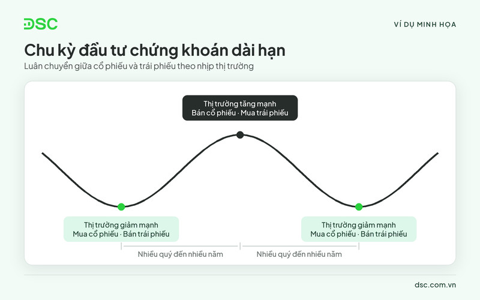
🆕 tai-sao-nen-dau-tu-trai-phieu-trai-phieu-phu-hop-voi-nha-dau-tu-nao-chu-ky-dau-tu.jpg 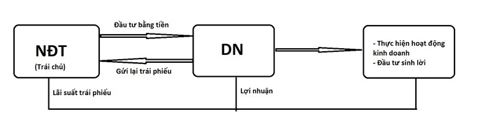
tai-sao-nen-dau-tu-trai-phieu-trai-phieu-phu-hop-voi-nha-dau-tu-nao-anh-1.jpg Copy HTML
Sau khi lưu: python scripts/sync_live.py --only tai-sao-nen-dau-tu-trai-phieu-trai-phieu-phu-hop-voi-nha-dau-tu-nao
66 ảnh → 4 ảnh, bỏ 9 H2 rỗng · Ảnh cần up: 4 (4 vẽ lại, 0 chuyển từ Google Docs) · File: 4-cms/do-lech-chuan-la-gi.html · Live: mở bài
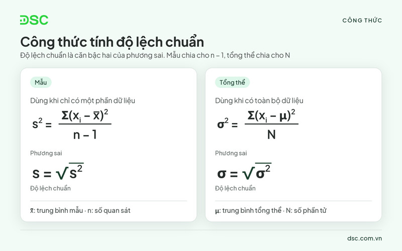
🆕 do-lech-chuan-la-gi-cong-thuc.jpg 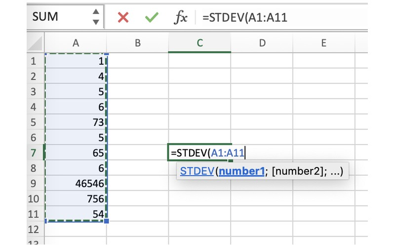
🆕 do-lech-chuan-la-gi-ham-stdev-excel.jpg 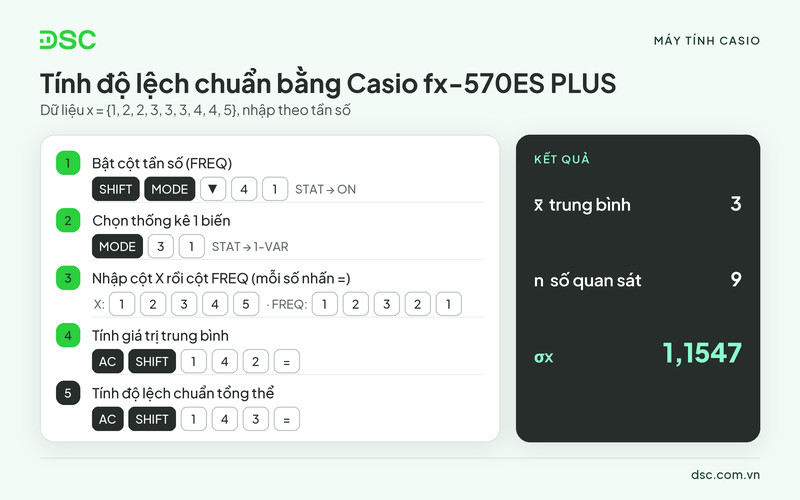
🆕 do-lech-chuan-la-gi-fx-570es.jpg 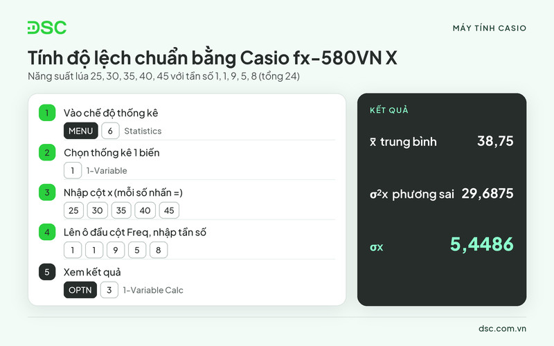
🆕 do-lech-chuan-la-gi-fx-580vn-x.jpg Copy HTML
Sau khi lưu: python scripts/sync_live.py --only do-lech-chuan-la-gi
Ảnh mờ → vẽ lại · Ảnh cần up: 4 (1 vẽ lại, 3 chuyển từ Google Docs) · File: 4-cms/npv-va-irr-la-gi.html · Live: mở bài
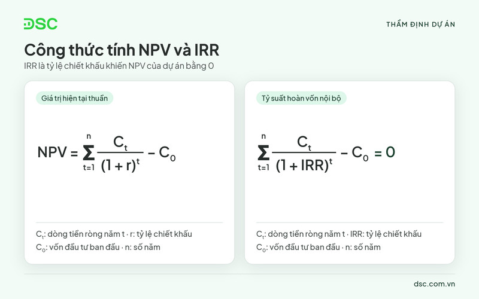
🆕 npv-va-irr-la-gi-cong-thuc.jpg npv-va-irr-la-gi-anh-1.jpg npv-va-irr-la-gi-anh-2.jpg 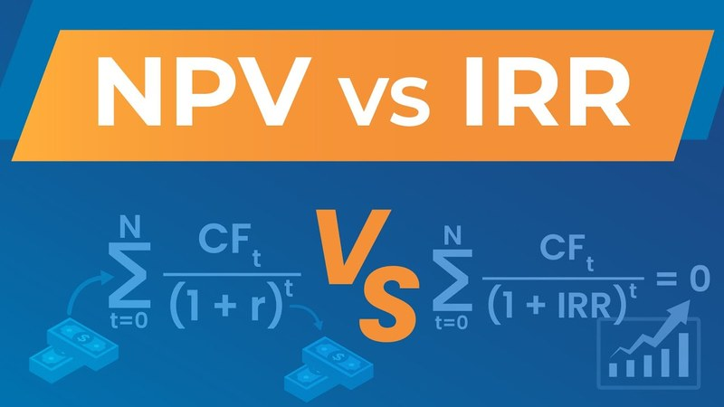
npv-va-irr-la-gi-anh-5.jpg Copy HTML
Sau khi lưu: python scripts/sync_live.py --only npv-va-irr-la-gi
Ảnh mờ → vẽ lại · Ảnh cần up: 2 (2 vẽ lại, 0 chuyển từ Google Docs) · File: 4-cms/rui-ro-tin-dung-la-gi.html · Live: mở bài
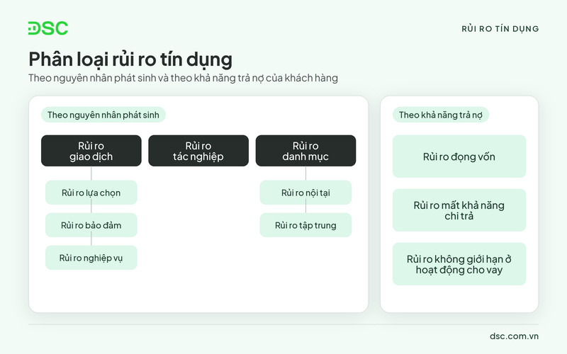
🆕 rui-ro-tin-dung-la-gi-phan-loai.jpg 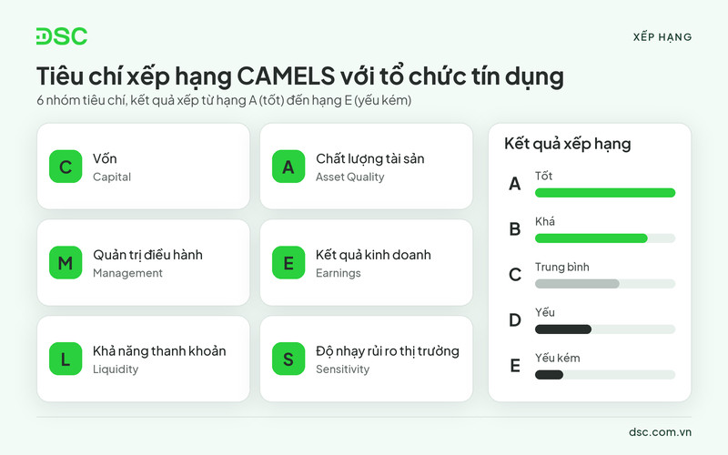
🆕 rui-ro-tin-dung-la-gi-camels.jpg Copy HTML
Sau khi lưu: python scripts/sync_live.py --only rui-ro-tin-dung-la-gi
Ảnh mờ → vẽ lại · Ảnh cần up: 2 (1 vẽ lại, 1 chuyển từ Google Docs) · File: 4-cms/chi-bao-atr-la-gi.html · Live: mở bài
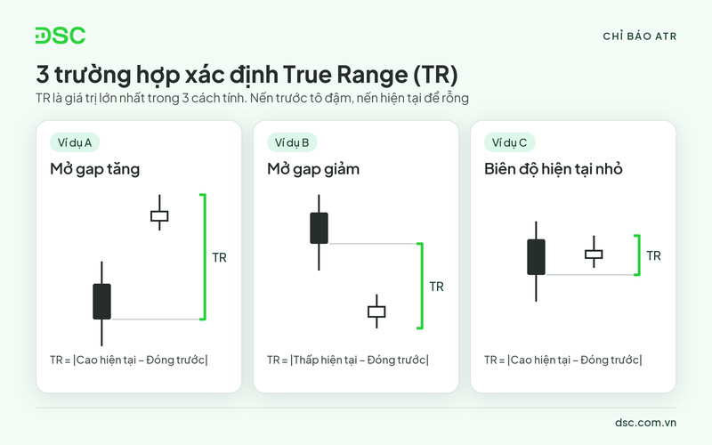
🆕 chi-bao-atr-la-gi-true-range.jpg 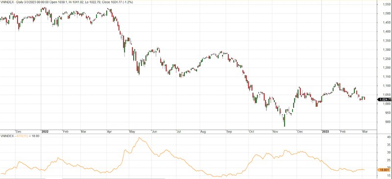
chi-bao-atr-la-gi-anh-2.jpg Copy HTML
Sau khi lưu: python scripts/sync_live.py --only chi-bao-atr-la-gi
Ảnh mờ → vẽ lại · Ảnh cần up: 4 (1 vẽ lại, 3 chuyển từ Google Docs) · File: 4-cms/mo-hinh-nen-hammer-la-gi.html · Live: mở bài
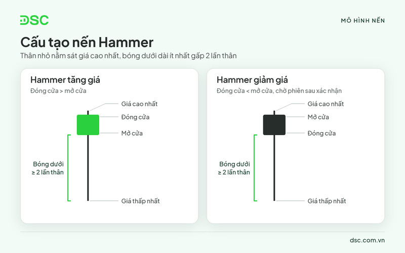
🆕 mo-hinh-nen-hammer-la-gi-cau-tao.jpg 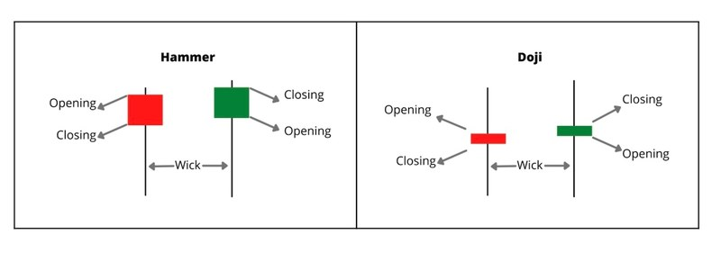
mo-hinh-nen-hammer-la-gi-anh-2.jpg 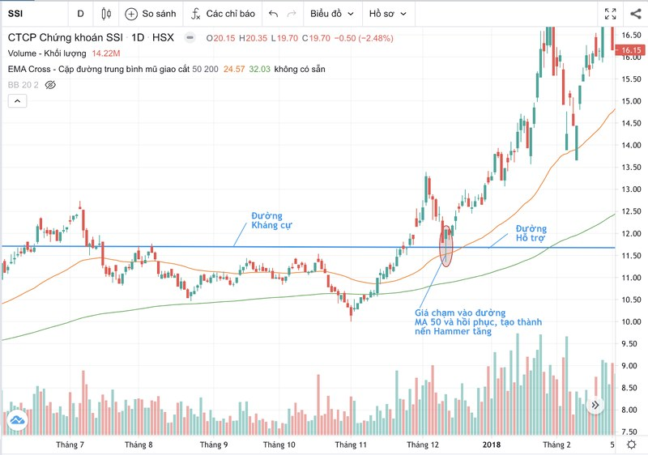
mo-hinh-nen-hammer-la-gi-anh-3.jpg 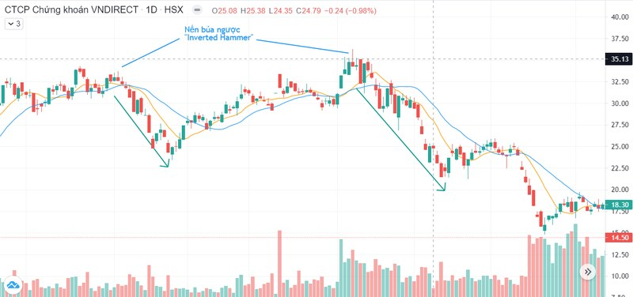
mo-hinh-nen-hammer-la-gi-anh-4.jpg Copy HTML
Sau khi lưu: python scripts/sync_live.py --only mo-hinh-nen-hammer-la-gi
Ảnh mờ → vẽ lại · Ảnh cần up: 3 (1 vẽ lại, 2 chuyển từ Google Docs) · File: 4-cms/mau-hinh-nen-bao-trum-la-gi.html · Live: mở bài
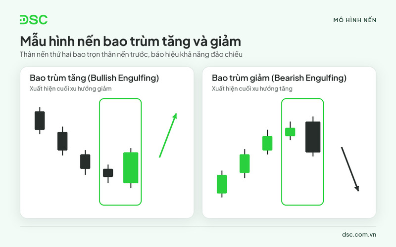
🆕 mau-hinh-nen-bao-trum-la-gi-tang-giam.jpg 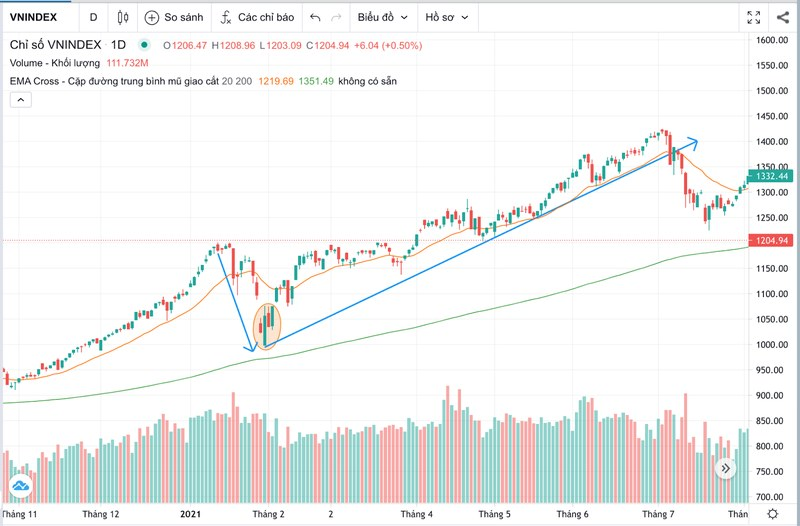
mau-hinh-nen-bao-trum-la-gi-anh-2.jpg 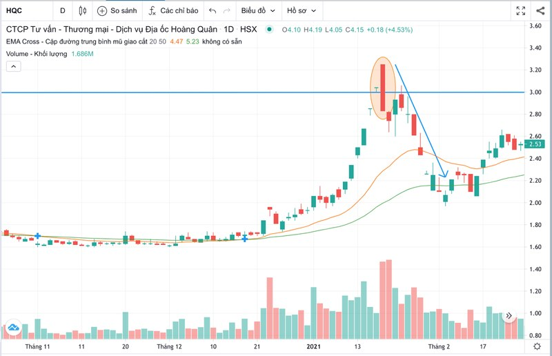
mau-hinh-nen-bao-trum-la-gi-anh-3.jpg Copy HTML
Sau khi lưu: python scripts/sync_live.py --only mau-hinh-nen-bao-trum-la-gi
Ảnh mờ → vẽ lại · Ảnh cần up: 7 (1 vẽ lại, 6 chuyển từ Google Docs) · File: 4-cms/nen-doji-la-gi.html · Live: mở bài
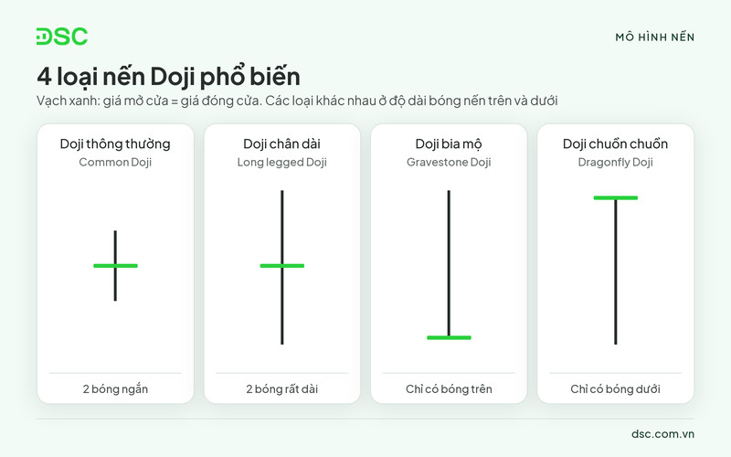
🆕 nen-doji-la-gi-4-loai.jpg 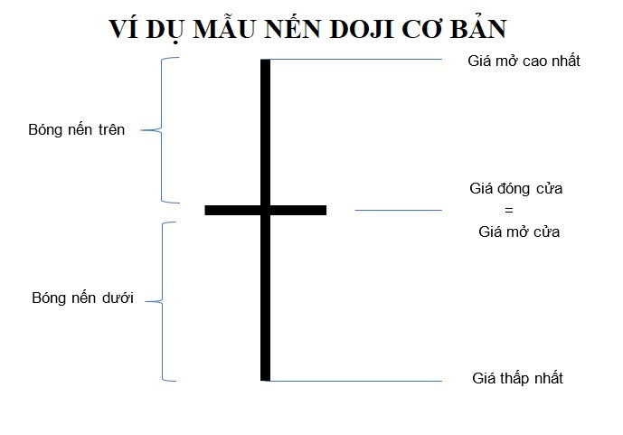
nen-doji-la-gi-anh-1.jpg 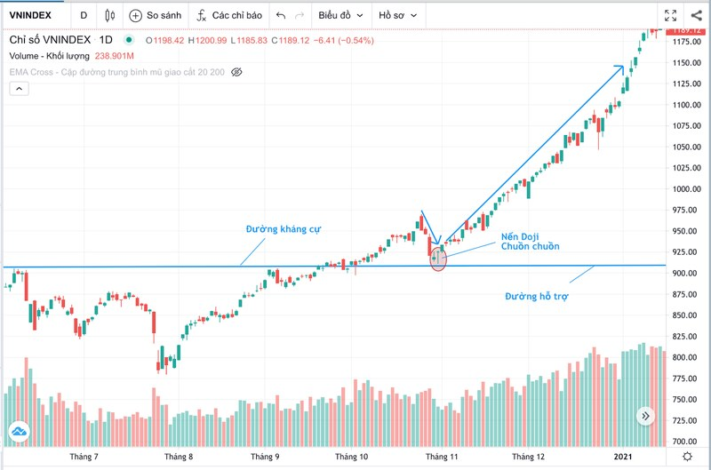
nen-doji-la-gi-anh-3.jpg 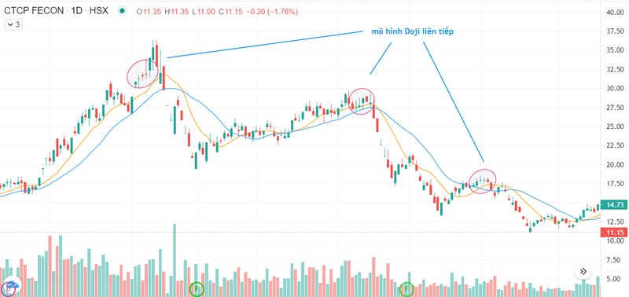
nen-doji-la-gi-anh-4.jpg 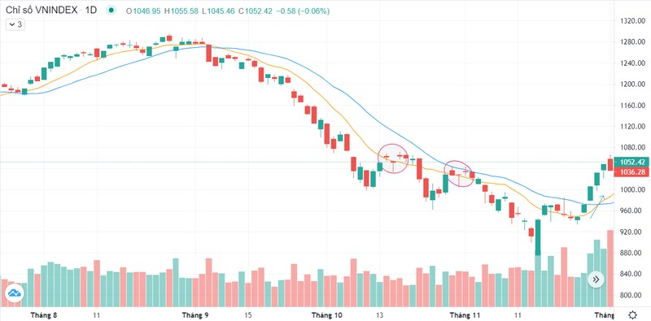
nen-doji-la-gi-anh-5.jpg 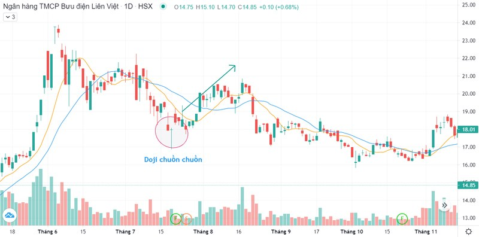
nen-doji-la-gi-anh-6.jpg 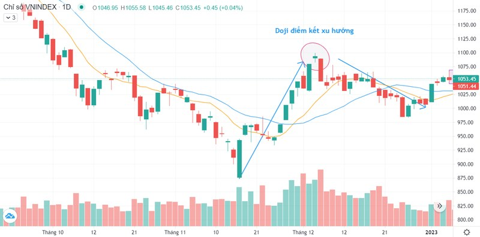
nen-doji-la-gi-anh-7.jpg Copy HTML
Sau khi lưu: python scripts/sync_live.py --only nen-doji-la-gi